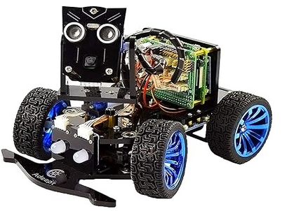
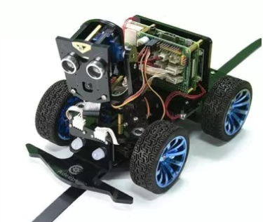
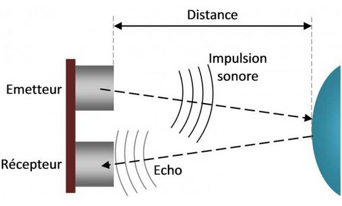
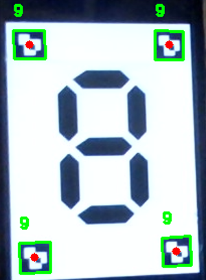
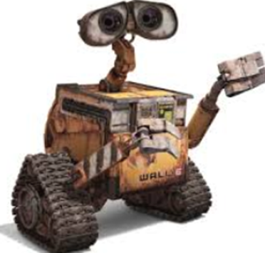

Wali
Programmation python du robot PiCar-B

Présentation
Ce projet s'est déroulé sur mes 2 ans de prépa, l'objectif était d'inclure un peu de pratique
dans notre monde de théorie.
Ce robot, renommé Wali, devait être capable de se déplacer en autonomie sur un circuit jonché
d'embuche en tout genre.

Rester en piste
Comme le nom l'indique, la première preoccupation fut de garder le robot sur sa voie.
Dans le cadre du projet la "route" était fournie par l'école, une bande noire de 3 centimètres
de large court sur un fond blanc immaculé.
Pour réaliser cette prouesse digne de Tesla, on utilise des capteurs infrarouge. Le principe est
relativement
simple
- On place 3 capteurs en ligne sous l'axe des roues avant
- On bombarde des IR sur la piste
- Le noir ne renvoi presque rien de ces IR
- Si le capteur du milieu ne reçoit rien et que les autres en reçoivent, on va tout droit
- Si le capteur gauche ou droit ne reçoit rien, on a dévié
- En fonction des inputs, on adapte la direction
Bien sûr, il faut régler les différentes sensibilités au femtométre près.
Malheureusement pour la sécurité des passagers, je ne savais pas comment implémenter des interruptions. Le check des capteurs était donc managé en polling 😬. Au plus grand bonheur de ma note, wali n'avance vraiment pas vite, le polling a suffi pour la direction.

Eviter les obstacles
Une autre bonne idée pour un véhicule autonome, c'est de ne pas se manger les murs.
Pour éviter les obstacles, on utilise un capteur très fréquent en prototypage arduino, le HC-SR04. C'est un module composé de 3 parties principales, un émetteur, un récepteur et un "chronomètre". Une onde est envoyé vers l'infini et l'au dela, à ce moment le chronomètre se lance, si on capte le renvoi de l'onde, on arrête le chrono. Vu que l'on connait la vitesse du son, on fait un petit calcul pas très savant, on a la distance de l'objet le plus proche.
Encore une fois, le polling s'est chargé de cette détection. Catastrophique performance, mais bon, si ça marche on touche pas n'est-ce pas ?

Respecter le code de la route
On avance, on ne se prend plus les murs, manque plus que la maitrise des panneaux. Sur la piste, sont disposés différents types de panneaux : des feux tricolores, des flèches, et même des chiffres.Pour chaque panneau une décision doit être prise :
- Un feu vert : on continue notre vie
- Un feu rouge : on s'arrête
- Un changement de direction : on bifurque
- Un chiffre : on patiente gentiment x secondes
C'est là que le concept de computer vision fait son entrée fracassante. On en voit à gauche un exemple, la caméra du robot prend une photo et des algorithmes viennent détecter les éléments importants.
Ici, les algorithmes détectent des arucos, ce sont des tags assez répandus qui permettent d'identifier une image facilement. Le code aruco est traduit par un 9, c'est du côté software que l'on associe le code à une signification particulière, un 8 dans ce cas.
Le problème, c'est que c'est un peu facile les arucos. Il y a deja de nombreuses bibliothèques toutes faites pour les détecter. J'ai donc décidé de faire une ia (grand mot j'avoue) qui va faire le taf toute seul comme une grande.
Je ne vais pas m'étendre sur le sujet étant donné que j'ai déja 2 articles qui traitent du sujet, mais voila les étapes que j'ai suivies pour y parvenir.
- Génération par des algorithmes de mon cru d'une quantité phénoménal de flèches et chiffres sur 7 segments (random bien sûr). On fait l'étiquetage dans le même temps.
- Mise en place de l'architecture, un Convolutional Neural Network. J'ai choisi ce modèle car les images sont en noir et blanc, les convolutions marchent vraiment bien dessus.
- Entrainement de l'ia avec la méthode classique. Vu que je le fais en python d'aucuns pourraient se dire "y a aussi des tonnes de bibliothèques toutes faites pour ça". C'est juste, mais vu que j'aime me casser la tête pour aucune bonne raison apparemment, j'ai tout fait à la main.
Pour les couleurs, c'est bien sûr inutile, il suffit de faire une moyenne sur les différents channels de couleur, r, g et b. Une fois fait, on trouve celle qui est le plus élevée.

Conclusion
Wali n’est peut-être pas prêt à concurrencer Tesla, mais ce projet m’a appris énormément. De la programmation bas-niveau avec du polling (🙃) à la mise en place de réseaux de neurones pour la vision, chaque étape m’a permis de toucher à des domaines très variés : électronique, capteurs, traitement du signal, computer vision et même un peu d’IA.
Le robot avance, tourne, évite les murs et comprend les panneaux... ce qui, pour un amas de capteurs
et de bouts de plastique, est déjà une petite victoire.
Plus sérieusement, ce projet m’a confirmé qu’apprendre en construisant est la meilleure façon
de progresser, même si le résultat reste parfois un peu bancal.
Bref, Wali restera une belle expérience de prépa, mélange de galères techniques, de bidouilles en tout genre et de petites fiertés quand, enfin, ça marche 🎉.